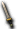
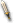
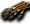
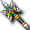
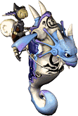
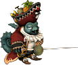
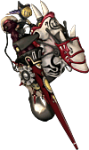
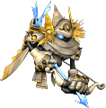

1.關於終極武器
【概要】
據說地上系最高級裝備「終極武器」的製造方法，
已有知道的NPC出現了。
這是問出製造方法、裝備最高級武器的機會。
你有辦法備齊必要的材料，將終極武器拿到手嗎？
一切都取決於你！！
【內容】
１．各地點會出現相關的NPC。
２．拜訪出現在王宮內的NPC「卡爾門」，詢問武器的製造方法。
３．從怪物或NPC等處取得作為素材的武器、「神聖魔法陣」、
作為材料的各種道具。
４．要收集材料，必須依職業拜訪卡爾門所指示的對應NPC，
進行任務後才能取得。
５．備齊必要材料後交給卡爾門，就能取得各職業的終極武器。
※ 武器製造有可能失敗。
※ 這個任務可以重複進行任意次數。
※ 作為任務的獎勵還能取得稱號。
※ 一般等級99以上的角色才能進行。
※ 終極武器無法交易轉讓。
2.想知道更多。
2.1 任務的開始方法
■開始條件 必須是等級99以上的角色。
拜訪盧亞斯王宮２(94,34)的卡爾門，對「適合你的武器・・・」的問題回答「是」即可開始任務。
卡爾門會要求你收集各素材武器、涅夫之鎧石10個、艾德魔石10個、神聖魔法陣、各職業任務道具。
各素材武器請見下表。
| 劍 |  雷澤爾劍 |
| 鈍器 |  矮人錘 矮人錘 |
| 拳套 |  綠地戰用鑽頭 綠地戰用鑽頭 |
 短劍 | 燕尾 |
| 法杖 |  安特治療師 安特治療師 |
| 魔珠 | 謎團寶珠 |
| 劍卡 |  高地雙刀 高地雙刀 |
| 魔法卡 | 聖者神諭牌組 |
 槍 |  不死之身扎貝爾 不死之身扎貝爾 |
| 豎琴 |  貝斯阿爾帕 貝斯阿爾帕 |
| 奇雷克 |  艾爾馬彎刀 |
2.2 神聖魔法陣(全職業共通)
■開始條件 **的終極武器 進行中
神聖魔法陣可透過任務進行取得。
跟卡雷瓦拉的弗莉亞（38,46）說話即可開始任務。
跟弗莉亞說話後，會被要求收集神聖魔法陣碎片1～4。
各掉落地點如下。
| 神聖魔法陣碎片1 |  海馬法師(海灘衝刺：地獄路線) |
| 神聖魔法陣碎片2 |  卡梅爾船長(惡魔島5、魔物城1) |
| 神聖魔法陣碎片3 | 蒂拉諾(火山1～2) |
| 神聖魔法陣碎片4 |  海馬騎士(海灘衝刺：地獄路線) |
背包中持有以上4種碎片後，再次跟弗莉亞說話，就能取得神聖魔法陣。
※神聖魔法陣碎片可以交易轉讓，但神聖魔法陣無法交易轉讓，請注意。
- 關於掉落
這裡的掉落與一般掉落不同，系統記錄會顯示「獲得了神聖魔法陣碎片○」。
只有在任務進行中才會掉落，隊伍中有任務進行中的角色時(不是隊長也可以)，全體隊員都是掉落對象。
而且不管在畫面外或在其他地圖，只要有組成隊伍，就是掉落的對象。
例：打倒地獄路線的海馬時，已確認掛機在魯克西翁鎮的隊員有拿到掉落。 - 備註
完成神聖魔法陣後，「神聖魔法陣完成」任務會開始進行
2.3 各職業任務道具（職業別任務）
■開始條件 "神聖魔法陣完成"進行中
從這裡開始是各職業的任務。
拜訪卡爾門告訴你的NPC後，任務開始。
這裡的掉落同樣與上述一致，只有任務進行中才會掉落，所以一定要先跟NPC說話再進行任務。
各NPC會要求你收集x個各職業的收集道具(狩獵場與掉落的敵人也在此時告知)。
各職業要收集的素材如下。
| 職業 | 任務NPC | 任務道具 | 收集道具 | 數量 | 討伐怪物 | 取得地圖 |
| 戰士 | 布拉特曼 盧亞斯酒館(26,29) | 奇怪的磨石 | 冰果實 | 10 | 修剪工具 | 阿德利文 |
| 修道士 | 奧拉提歐 魔界村神殿(58,65) |  藍色指虎飾品 藍色指虎飾品 | 無 | - |  [布羅尼] [布羅尼] | MC3 萊貝雅外 |
| 盜賊 | 奈特霍克 魯克西翁(32,41) |  紅色刀飾 紅色刀飾 |  死亡之眼的魔眼 死亡之眼的魔眼 | 10 |  死亡之眼(紅)、死亡之眼(茶) 死亡之眼(紅)、死亡之眼(茶) | 石化區1區 |
| 聖職者 | 帕特羅 米魯里斯(56,26) | 神聖印記 | 阿納卡姆箭的箭頭 | 10 |  [阿納坎] | 阿德利文10F |
| 魔術師 | 馬爾西 斯歐米(110,31) | 來歷不明的魔法石 |  艾梅斯的心臟 艾梅斯的心臟 | 10 | 埃米斯 | 泰拉斯 阿德利文6Ｆ |
| 預言者 | 斯特拉達 艾德安德(104,137) | 沉默水晶 | 艾梅斯的心臟 | 10 | 埃米斯 | 泰拉斯 阿德利文6Ｆ |
| 騎士 | 阿拉米斯 盧亞斯王宮前(88,123) | 忠誠之證 |  靈之氣運 靈之氣運 | 10 |  [阿波莉娜] [阿波莉娜] | 亞空間 |
| 吟遊詩人 | 巴哈姆特 萊貝雅旅館(26,27) | 有彈性的豎琴弦 |  壞掉的夏爾波 壞掉的夏爾波 | 1 | 石頭蝙蝠(紅) | 石化區2區 |
| 阿修羅 | 貝里克 魔界村神殿(92,67) | 古代彎刀碎片 | 1 | [幽靈弗里克爾] | 阿德利文(從蜂巢出現) |
將必要數量的收集道具放進背包(修道士除外)，再次跟各NPC說話，就能取得各職業的任務道具。
此時會獲得各職業的稱號。
戰士的情況
把冰果實10個交給布拉特曼，會先收到名為天空之息的道具，在海灘衝刺：噩夢路線對普羅布使用天空之息，討伐出現的名為瘋狂普羅布的怪物，再向布拉特曼報告，就能取得奇怪的磨石。
雖然數量很少，但噩夢路線確實有，請仔細找找。
修道士的情況
在1小時的限制時間內盡可能多討伐[布羅尼]，然後去向奧拉提歐報告。(報告也必須在1小時內完成。)
參考
| 剩餘時間 | 討伐數 | 是否通關 | 討伐比例(隻/分) |
| 29分 | 55隻 | 通關 | 1.77 |
| 35分 | 96隻 | 通關 | 3.84 |
| ？分 | 50隻 | 通關 | - |
| ？分 | 40隻 | 失敗 | - |
| ？分 | 40隻 | 通關 | - |
| 51分 | 44隻 | 通關 | 4.88889 |
| 52分 | 39隻 | 通關 | 4.875 |
| 50分 | 50隻 | 通關 | - |
| 56.5分 | 10隻 | 失敗 | - |
| 54分 | 20隻 | 失敗 | - |
| 55.5分 | 31隻 | 通關 | - |
※恐怕是每分鐘打倒幾隻就是通關條件
盜賊的情況
- 在石化區1從死亡之眼(紅茶)或死亡之眼(茶)取得「死亡之眼的魔眼」。
- 大致標準[2012,2]…1小時掉1個就算不錯了。也有狩獵5小時1個都沒掉的情況。
- 補充：m1的死亡之眼也有部分掉落。已確認死亡之眼(茶)有掉落（歡迎提供情報）
- 已確認掛機中的隊員也有掉落。跟接了任務的99以上盜賊組隊，用其他職業狩獵也會掉落。
聖職者的情況
前往阿德利文10F，打倒[阿納坎]取得10個阿納坎的箭頭，向帕特羅報告就完成了。
- [阿納坎]只在10F才有
- 通緝書任務每個角色也可以取得1個。
- 阿納坎的箭頭捆數是10 Wei1，但可以取得超過10個
- 只要集齊10個阿納坎的箭頭，就不需要打倒[阿納坎]
- 沒有時間限制
- (大致標準…2小時掉13個阿納坎的箭頭)
- (大致標準[2011,6]…1小時掉1～2個阿納坎的箭頭)
魔術師的情況
不停狩獵泰拉斯的米拉克巴克斯產出的艾梅斯是最有效率的。
用米拉克巴克斯築牆，就不會被艾梅斯打到。
狩獵挑戰期間會變成艾格拉菲斯盛宴，那個時段還是別去比較明智。
艾梅斯的心臟掉落率不太好，要有耐心堅持下去。
預言者的情況
請參照上面的魔術師項目。
騎士的情況
5小時結果是0個。
中途忍不住買了現金商城的掉落加成道具，結果白費了。
電漿捲軸把欄位塞滿所以就回去了。
收集碎片時被搞得相當火大，但跟這個比起來根本不算什麼。
吟遊詩人的情況
從[石頭蝙蝠]取得1個壞掉的夏爾波後向巴哈姆特報告，拜訪米魯里斯武器店的路易斯， 取得堅固的圓木(已確認從米魯里斯森林6[奈特卡普里]掉落)請他修理夏爾波，再交給斯歐米(159,52)的坎塔塔，就能收到有彈性的豎琴弦。
取得堅固的圓木(已確認從米魯里斯森林6[奈特卡普里]掉落)請他修理夏爾波，再交給斯歐米(159,52)的坎塔塔，就能收到有彈性的豎琴弦。
阿修羅的情況
從魔界村神殿內最右邊的NPC接任務。
打破冰之城阿德利文6樓～10樓存在的溫迪戈蜂巢，取得1個古代彎刀碎片。
也有人報告說是在打破溫迪戈蜂巢的瞬間掉落，
也有人報告說是從打破時出現的幽靈弗里克爾掉落。詳情有待驗證。
大致標準是持續打破蜂巢＋清理幽靈的話，大多1小時左右就能取得。
取得後回到魔界村神殿報告。
2.4 終極武器製作
收集齊所有素材後再次拜訪卡爾門，請他把素材全部合成，終極武器就完成了。
合成有成功率，失敗的話所有素材都會消失。
成功的話，同一伺服器會顯示「○○○獲得了至尊的證明，終極武器。」的紀錄。
作為成功率考察的參考（大約3～5成？）
第1個角色 失敗→成功→失敗→成功
第2個角色 失敗→失敗→成功
第3個角色 成功
第4個角色 失敗→失敗
2.5 終極武器升級
終極武器完成，且已取得稱號[至高的○○]的狀態下，
跟依卡魯斯的自然之鎚說話，就能再進行2階段的升級。
Q:終極武器升級
留言欄（不擅長編輯Wiki的人請在此留言）
目前顯示最新的10件。請參閱留言頁面
- 阿修羅的終極武器只有使用打破蜂巢瞬間掉落的碎片時才製作成功，請問是這樣嗎？ -- 賽托阿修羅? 2012-06-05 (二) 01:49:29
- 順帶一提我挑戰了5次，只有2次在打破蜂巢的瞬間掉出碎片，而且只有那2次成功。 -- 賽托阿修羅? 2012-06-05 (二) 01:52:24
- ↑第6次，用幽靈弗里克爾掉的碎片也成功了。是我先入為主了。抱歉！ -- 賽托阿修羅? 2012-06-24 (日) 20:30:30
- 關於古代彎刀碎片，我挑戰4次，4次都是打破蜂巢，蜂巢重生時掉落的。 -- 羅歐阿修羅? 2012-11-25 (日) 09:23:14
- 魔眼從m1的死亡之眼(茶)也會掉落。 -- 羅歐盜賊? 2012-11-25 (日) 20:07:39
- 我用HC狩獵，但箭頭只掉了3個。 -- 聖職者 2013-02-02 (六) 12:10:10
- 布羅尼不死族，剩餘40分鐘的時點打倒54隻就通關了。 -- 伊亞修道士? 2013-03-20 (三) 18:25:37
- 布羅尼不死族，剩餘50分鐘打倒40隻通關 是不是要維持每分鐘4隻以上？ -- [[ ]] 2013-05-11 (六) 11:09:40
- 布羅尼不死族，剩餘50分鐘打倒25隻也通關了。 -- [[ ]] 2013-05-12 (日) 14:13:35
- ↑連續留言抱歉，我寫錯了，是35隻； -- [[ ]] 2013-05-12 (日) 14:14:21
- &#